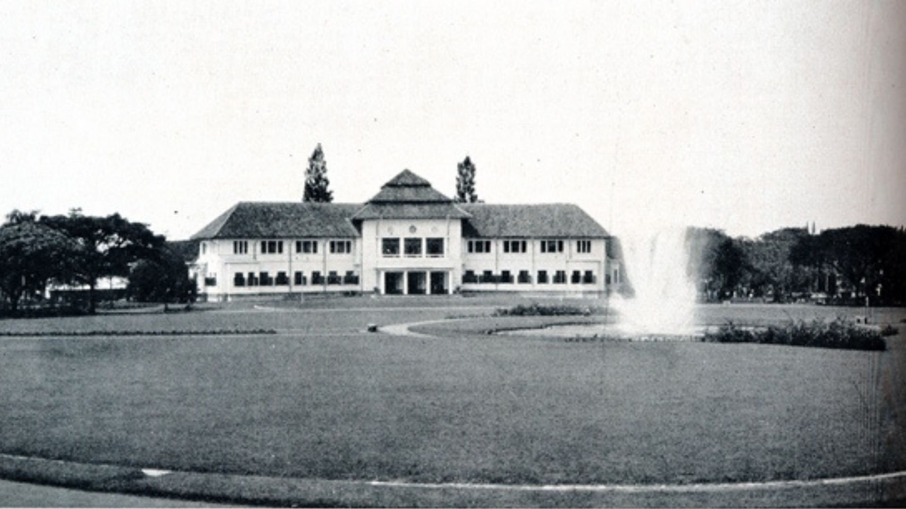
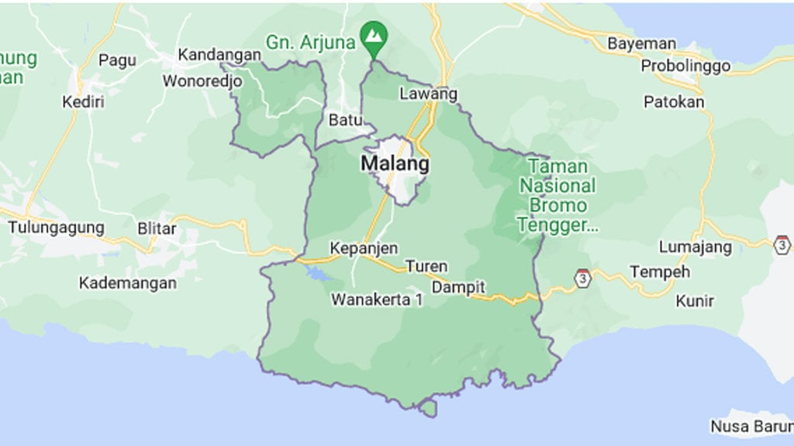
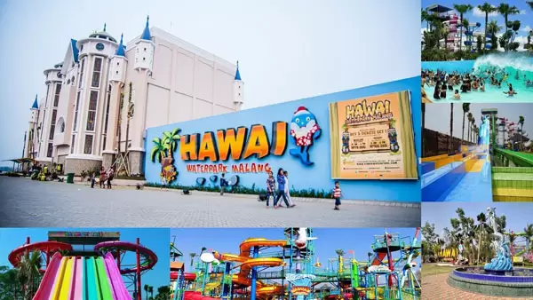
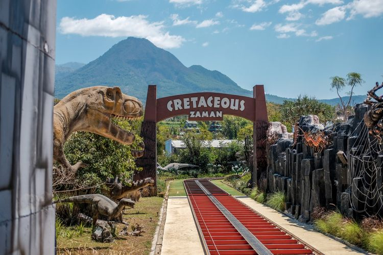
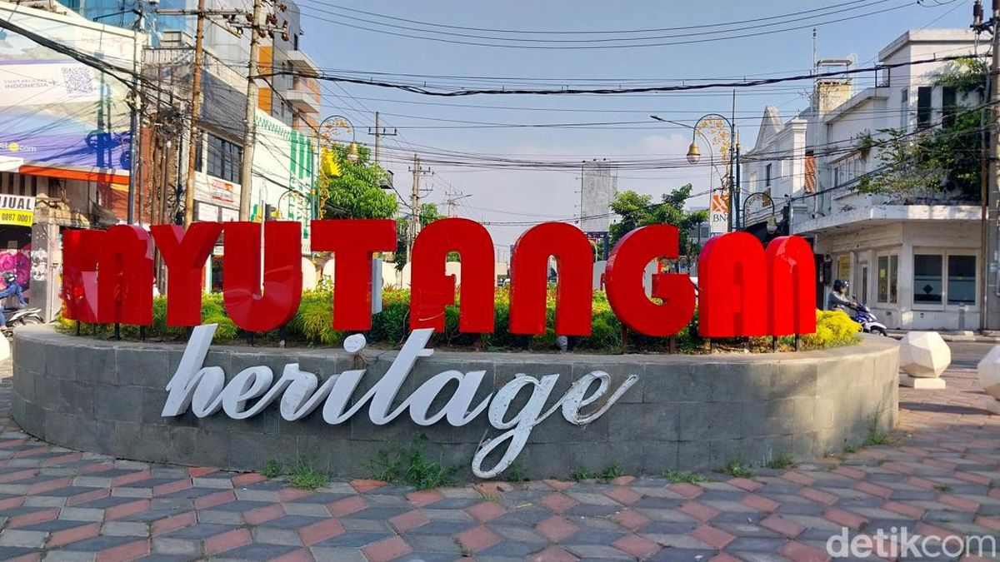

Sejarah

Kota Malang adalah sebuah kota yang terletak di Provinsi Jawa Timur,
Indonesia. Kota ini memiliki sejarah panjang yang dimulai sejak
zaman kerajaan. Pada masa kolonial Belanda, Malang berkembang pesat
sebagai pusat perdagangan dan pendidikan. Kota ini juga dikenal
dengan julukan Kota Bunga karena keindahan alam dan taman-tamannya.
Berdasarkan filosofi Jawa kuno, Malang berasal dari kata Malang yang
berarti beruntung. Hal ini dikarenakan Malang dikelilingi oleh
pegunungan dan memiliki iklim yang sejuk. Kota ini juga memiliki
banyak tempat wisata alam yang menarik seperti Gunung Bromo, Coban
Rondo, dan Pantai Balekambang.
Geografis

Kota Malang, yang terletak di Jawa Timur, berada di dataran tinggi dengan ketinggian sekitar 440-667 meter di atas permukaan laut. Dikelilingi oleh pegunungan, kota ini memiliki iklim sejuk yang menjadi daya tarik bagi wisatawan. Letaknya yang strategis, dengan Gunung Arjuno dan Gunung Kawi di sekitarnya, memberikan pemandangan alam yang indah dan udara yang segar.
Secara administratif, Malang berbatasan dengan Kabupaten Malang dan berfungsi sebagai pusat perdagangan dan pendidikan di kawasan Malang Raya. Sungai Brantas yang mengalir di sekitar kota ini juga menyediakan sumber air yang penting. Dengan kondisi geografisnya yang mendukung, Malang memiliki tanah subur yang ideal untuk pertanian, menjadikannya penghasil komoditas seperti apel dan sayuran.
Wisata
Sejak dibukanya Jalan Tol Malang-Pandaan, Kota Malang semakin ramai dikunjungi wisatawan. Kota ini memiliki berbagai tempat wisata menarik yang cocok untuk berlibur bersama keluarga atau teman. Berikut adalah beberapa tempat wisata populer di Malang:
Hawaii Waterpark

Berlokasi di Jalan Graha Kencana Raya, Hawaii Waterpark menawarkan
berbagai wahana permainan air yang seru. Mulai dari kolam renang
dengan air terjun, seluncuran, hingga taman bermain anak. Tempat
ini cocok untuk berlibur bersama keluarga atau teman. Harga tiket
masuknya pun terjangkau, yaitu sekitar Rp 100.000 per orang.
Kunjungi Lokasi
Jatimpark 3 Malang

Jatimpark 3 Malang adalah tempat wisata yang cocok untuk berlibur
bersama keluarga. Terletak di Jalan Oro-oro Ombo, tempat ini
menawarkan berbagai wahana permainan seru seperti roller coaster,
taman bunga, dan museum satwa. Harga tiket masuknya sekitar Rp
150.000 per orang.
Kunjungi Lokasi>Kunjungi Lokasi
Kayutangan Heritage

Kayutangan Heritage adalah kawasan wisata sejarah yang terletak di
Jalan Kayutangan. Tempat ini menawarkan berbagai bangunan tua
bersejarah yang masih terawat dengan baik. Pengunjung dapat berjalan kaki dan menikmati dinginnya kota malam dengan kopi atau coklat hangat yang dijual di sepanjang jalan.
Kunjungi Lokasi>Kunjungi Lokasi